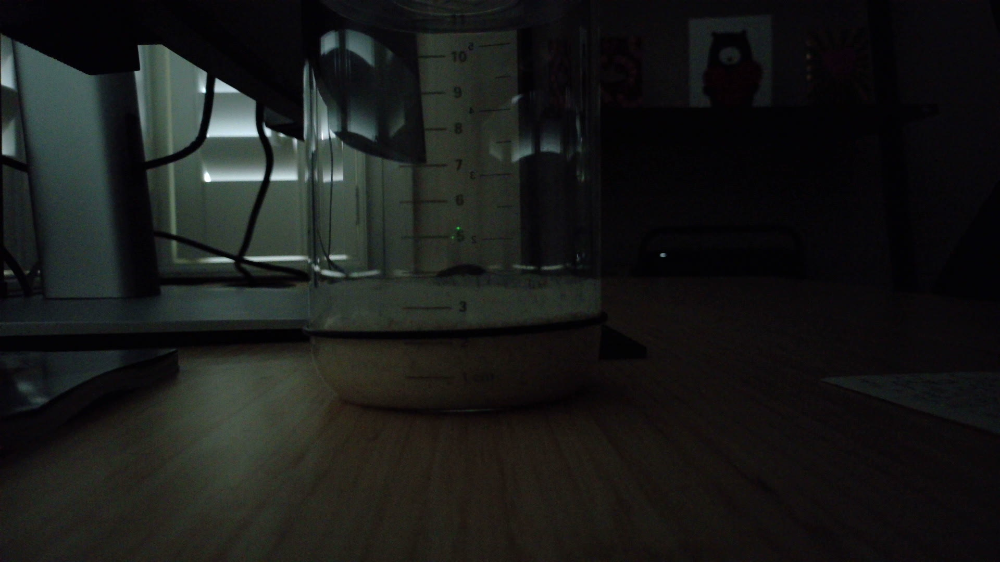

Fed.
Simon reset the baseline. The origin story begins again.
A living fermentation experiment watched by a webcam and narrated by Hermes. The agent checks the starter, estimates its rise, writes notes, and pings Telegram when the jar does something worth noticing.

Likely peak is 11:16, the highest reliable reading; later high readings are treated as suspect residue instead of moving the peak.
The backend uses prior calibrated cycles plus today’s reliable pre-peak readings; late residue-prone photos remain visible as raw visual readings but do not automatically move the accepted curve.
Simon reset the baseline. The origin story begins again.
Suspicious optimism detected near the lower edge of the jar.
Baseline set to 2.2cm.
Simon reviewed today’s photos: greatest actual height was 3.4cm at 11:16. Later higher visual estimates are suspect because starter residue remained stuck to the jar walls after the starter fell.
The rise curve steepens. Main character energy.
For early calibration: compare each webcam frame with Hermes’s label, rise estimate, phase, and confidence.
Hermes visual read: starter surface near 3.8 cm; ignored glare, wall residue, reflections, and old streaks.
Hermes visual read: current surface is estimated near 3.8 cm against the 2.2 cm baseline; dim lighting and reflections reduce certainty.
Hermes visual read: surface appears near the lower 3 cm band; ignored glare, jar curvature, wall residue, reflections, and old streaks.
Hermes visual read: surface is around the mid-3 cm band; ignored glare, residue, jar curvature, and old streaks.
Hermes visual read: Current starter surface is conservatively estimated at about 3.2 cm, ignoring glare, residue, bubbles, reflections, and old streaks.
Hermes visual read: The active current surface appears conservatively around 3.4 cm, not counting wall residue or glare.
Hermes visual read: Conservative estimate from visible jar markings places the actual starter surface at about 3.6 cm.
Hermes visual read: current starter surface is just above the 3 cm mark, about 3.3 cm; bubbles remain visible as the rise eases.
Hermes visual read: surface sits just below the 4 cm mark; ignoring glare and wall streaks, a conservative current height is about 3.6 cm.
Hermes visual read: surface appears near the 3.8 cm mark after ignoring glare, wall residue, reflections, and old streaks.
Hermes visual read: current active surface appears slightly above the 3 cm mark, with bubbles visible; glare, jar curvature, residue, and old streaks ignored.
Hermes visual read: surface sits just above 3 cm and below 4 cm; glare and old streaks ignored.
Hermes visual read: Surface appears near the 3.3 cm level, a mostly flat bubbly top just above the 3 cm mark; glare, jar curvature, residue, and streaks ignored.
Hermes visual read: Current surface is a mostly horizontal foamy boundary just above 3 cm (~3.3 cm); flat/slightly uneven with moderate bubbles, ignoring wall residue and glare.
Hermes visual read: Actual surface fairly level and bubbly just above 3 cm; estimate approx 3.1-3.6 cm.
Hermes visual read: Main foamy surface just above the 3 cm mark; wall residue/glare ignored; estimate about 3.1-3.5 cm.
Hermes visual read: Main foamy surface sits a little above the 3 cm mark; plausible range about 3.2-3.6 cm.
Hermes visual read: Main surface a little above 3 cm with bubbly uneven top; plausible 3.2-3.6 cm.
Hermes visual read: main surface just above 3 cm mark; approx 3.0-3.4 cm, phase uncertain
Hermes visual read: bulk surface is conservatively near 3.0cm; glare and jar curvature limit precision.
Fresh webcam frame published; starter appears close to baseline, with precise rise estimate pending calibration.
Every few minutes, a small local computer captures a webcam image. Hermes estimates the starter’s current height, compares it with previous readings, records uncertainty, updates the website, and sends Telegram alerts for meaningful events. The AI can be wrong — glass, residue and lighting are tricky — so Simon can correct key moments like feeding or baseline resets.